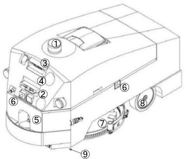

Collected by our very own FLOBOT (FLOor washing RObot)
Description
FLOBOT is an advanced autonomous floor scrubber. This dataset was collected with FLOBOT including data of five sensors for environment perception as well as the robot odometry.
Data collection was carried out in real environments including airport, warehouse, hospital and supermarket.
... blablabla ...
For a quick overview, please refer to the following video.
with real prototype, in real environments such as airport, warehouse, hospital and supermarket.
Data annotation ... blablabla ...
baselines based on relevant state-of-the-art methods, for ... blablabla ... challenges.
Although not our main use, since the dataset provides robot odometry and TF tree rising up to "world", it is also suitable for the study of localization and mapping problems.
Moreover, as our data involves many different and very characteristic public scenarios (i.e. airport, warehouse, hospital and supermarket), it is also suitable for semantic mining of data and contextual research.
Citation
If you publish work based on, or using, this dataset, we would appreciate citations to the following:
manuscript in preparation ...
Recording platform

Velodyne VLP-16 3D lidar
Xtion PRO LIVE RGB-D camera (forward facing)
Xtion PRO LIVE RGB-D camera (floor facing)
ZED stereo camera
Line laser
Laser projector for proactive safety module
Scrubber + squishee
Wheel /Differential Drive
Front Wheel, Active Rotation control
Challenges
Many new research challenges have been introduced in this dataset, such as ... blablabla ...
Zhi Yan, Tom Duckett, and Nicola Bellotto. Online learning for 3D LiDAR-based human detection: Experimental analysis of point cloud clustering and classification methods. Autonomous Robots, 2019. [BibTeX | PDF]
Zhi Yan, Li Sun, Tom Duckett, and Nicola Bellotto. Multisensor online transfer learning for 3D LiDAR-based human detection with a mobile robot. In Proceedings of the 2018 IEEE/RSJ International Conference on Intelligent Robots and Systems (IROS), Madrid, Spain, October 2018. [BibTeX | PDF | Code | Dataset]
Li Sun, Zhi Yan, Sergi Molina Mellado, Marc Hanheide, and Tom Duckett. 3DOF pedestrian trajectory prediction learned from long-term autonomous mobile robot deployment data. In Proceedings of the 2018 IEEE International Conference on Robotics and Automation (ICRA), Brisbane, Australia, May 2018. [BibTeX | PDF | Dataset | Video]
Zhi Yan, Tom Duckett, and Nicola Bellotto. Online learning for human classification in 3D LiDAR-based tracking. In Proceedings of the 2017 IEEE/RSJ International Conference on Intelligent Robots and Systems (IROS), pages 864-871, Vancouver, Canada, September 2017. [BibTeX | PDF | Code | Dataset | Video1 | Video2]
Andreas Grünauer, Georg Halmetschlaeger-Funek, Johann Prankl, and Markus Vincze. The Power of GMMs: Unsupervised Dirt Spot Detection for Industrial Floor Cleaning Robots. In Proceedings of Towards Autonomous Robotic Systems: 18th Annual Conference, (TAROS), Guildford, UK, July 19–21, 2017 [BibTeX | PDF | Code | Dataset]
Simon Schreiberhuber, Thomas Mörwald, and Markus Vincze. Bilateral Filters for quick 2.5D Plane Segmentation. In Proceedings of Austrian Association for Pattern Recognition OAGM, Vienna, AUT, May 10–12, 2017 [BibTeX | PDF ]
Farhoud Malekghasemi, Georg Halmetschlaeger-Funek, and Markus Vincze. Autonomous Extrinsic Calibration of a Depth Sensing Camera on Mobile Robots. In Proceedings of Austrian Robotics Workshop ARW, Innsbruck, AUT, May 17–18, 2018 [BibTeX | PDF ]
Georg Halmetschlaeger-Funek, Markus Suchi, Martin Kampel, and Markus Vincze. An Empirical Evaluation of Ten Depth Cameras: Bias, Precision, Lateral Noise, Different Lighting Conditions and Materials, and Multiple Sensor Setups in Indoor Environments. In IEEE Robotics Automation Magazine, Pages 67-77, August 14, 2018 [BibTeX | PDF | Dataset ]
Georg Halmetschlaeger-Funek, Johann Prankl, and Markus Vincze. Towards Autonomous Auto Calibration of Unregistered RGB-D Setups: The Benefit of Plane Priors. In Proceedings of the 2018 IEEE/RSJ International Conference on Intelligent Robots and Systems (IROS), Brisbane, Australia, May 2018. [BibTeX | PDF ]